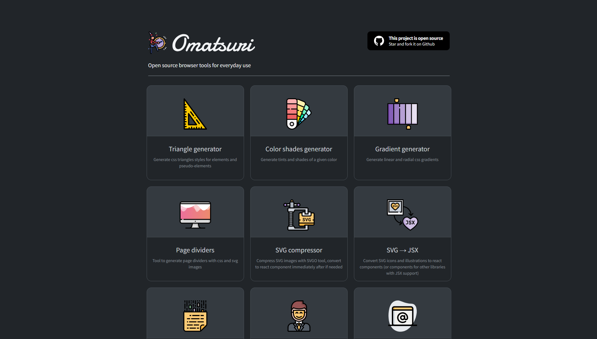
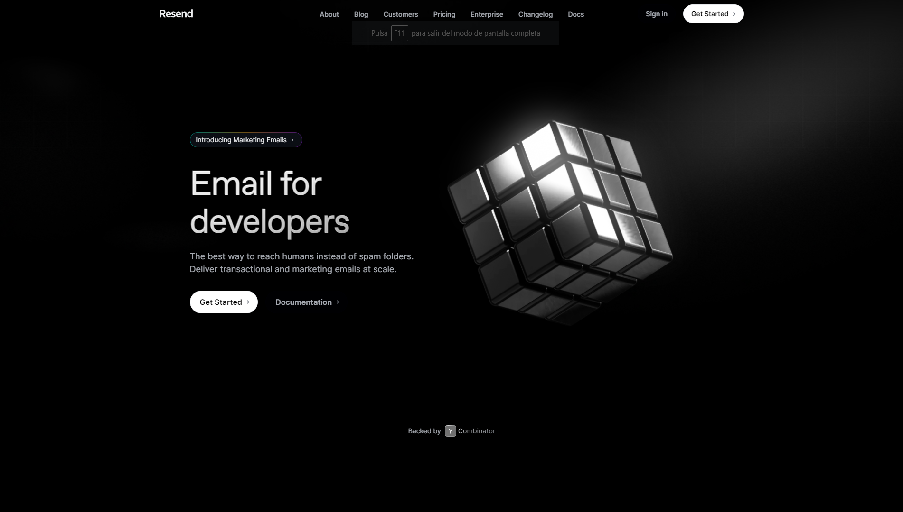

Hi, I'm Guillermo Sicilia
09/202106/2023
Completed the Superior Degree Formative Cycle of Web Applications Development in IES Puerto de la Cruz - Telesforo Bravo.
The duration of this course was 2 years in which various programming languages and various tools were taught. In the first year, we saw Java for making applications, XSD, XML, DTD, etc as a markup language, MySQL as a language for dealing with databases, and we were introduced to HTML and CSS. Apart from all this, we saw the principles of Agile Methodologies and code refactoring together with unit testing in maven with JUnit.
In the second year, we got deeper into the world of web programming and learned Angular and PHP as Back End, JavaScript and Bootstrap in the Front End part, and we deployed small applications with frameworks like Laravel, Django or Express.
03/202305/2023
Almost finishing the course of the Superior Degree Formative Cycle in Development of Web Applications, they put us in the company Atos to carry out the company practices. There we were trained in the Spring Boot framework and we continue to see Angular as Front. As a final project we had to make the database in MySQL, the Back End in Spring Boot and the Front End in Angular + Boostrap as a CSS tool.
Omatsuri
 VisitarEsta es una página donde encontrarás varias herramientas orientadas al frontend como: Generador de triángulos, Generador de Gradientes, Divisores de Página, etc

Resend
 VisitarResend es una herramienta con la que podrás mandar 3000 emails gratis por mes y es bastante fácil y cómoda de usar